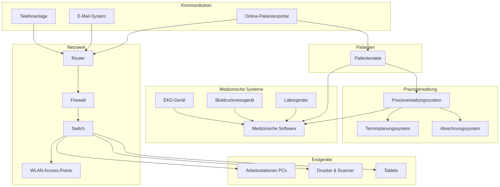

IT-Sicherheit
Einleitung
Die KBV IT-Sicherheitsrichtlinie wurde von der Kassenärztlichen Bundesvereinigung (KBV) entwickelt, um die Anforderungen von § 75b SGB V zu erfüllen, einem Gesetz zur Stärkung der IT-Sicherheit im Gesundheitswesen. Die Richtlinie standardisiert technische und organisatorische Maßnahmen (TOMs) zur Datensicherheit gemäß Artikel 32 der DSGVO und unterscheidet sich nach Praxisgröße und IT-Infrastruktur. Sie fokussiert sich auf die Ziele Vertraulichkeit, Integrität und Verfügbarkeit von Daten und wird jährlich mit dem BSI aktualisiert. Diese Richtlinie ist für alle Praxen im gesetzlichen Krankenversicherungssystem verpflichtend und unterstützt eine schrittweise Umsetzung. ((KBV) 2020)
Beispiele für IT-Schwachstellen
Der “CyberPraxMed”-Bericht des BSI (Sicherheit in der Informationstechnik 2023) untersucht die IT-Sicherheitslage in deutschen Arztpraxen. Die Wahrscheinlichkeit eines erfolgreichen Cyberangriffs wird als hoch eingestuft, während die bestehenden Richtlinien oft nicht umgesetzt werden. Der Bericht listet spezifische Risiken auf:
- Unbeaufsichtigte PCs: Viele Praxen haben Computer, die mit aktiven Benutzersitzungen unbeaufsichtigt gelassen werden, sodass Patienten oder andere externe Personen Zugang zu diesen Systemen haben könnten.
- Unsicherer Fernzugriff: Praxen nutzen häufig VPN oder RDP-Verbindungen zur Netzwerkzugriffs, manchmal mit privaten Geräten zur Datenverarbeitung und -speicherung, was sensible Informationen gefährden kann.
- Fehlende Backup-Tests: Regelmäßige Tests der Backup-Funktionen werden oft nicht durchgeführt, was bedeutet, dass nach einem Angriff möglicherweise keine Datenwiederherstellung möglich ist.
- Unsichere Netzwerkbuchsen: Es gibt oft offene oder ungeschützte Netzwerkbuchsen in den Praxen, die als Angriffspunkte genutzt werden könnten.
- Private Geräte: Viele Praxen integrieren private Geräte in das gleiche Netzwerk wie ihre professionelle Ausrüstung, was die Sicherheit des gesamten Netzwerks gefährden kann.
- Fehlende Netzwerksegmentierung: Es fehlt an der Trennung von LAN, WLAN, medizinischen Geräten und IT-Ausrüstung, was das Risiko der Malwareverbreitung erhöht.
- Unverschlüsselte E-Mails: Einige Praxen tauschen Patientendaten über unverschlüsselte E-Mails aus, wodurch diese Daten leicht abgefangen werden können.
- Fehlende Sicherheitssysteme: Viele Praxen verwenden keine Systeme zur Eindringungserkennung oder -verhinderung (IDS/IPS), was Angriffe weniger wahrscheinlich macht zu entdecken oder zu verhindern.
- Fehlende IT-Dokumentation: Es gibt häufig keine ausreichende Dokumentation der IT-Struktur und -Sicherheitsmaßnahmen, was bedeutet, dass Schwachstellen oft unbemerkt und unbehandelt bleiben.
Praxisspezifische IT-Sicherheitsanforderungen
Nach Praxisgröße:
- Kleine Praxen (1-5 Personen im Datenerfassungsprozess):
- Grundanforderungen:
- Anlage 1 und Anlage 5 der KBV IT-Sicherheitsrichtlinien müssen eingehalten werden.
- Grundanforderungen:
- Mittelgroße Praxen (6-20 Personen im Datenerfassungsprozess):
- Grund- und Zusatzanforderungen:
- Anlage 1 und 5, plus zusätzliche Maßnahmen in Anlage 2 (wie App-Berechtigungen, Zugangskontrolle für Webanwendungen, sichere Authentifizierung, Protokolle für mobile Geräte und Datentransfer).
- Grund- und Zusatzanforderungen:
- Große Praxen (mehr als 21 Personen oder hohes Datenaufkommen):
- Umfassende Anforderungen:
- Anlagen 1, 2 und 5, sowie zusätzliche Maßnahmen in Anlage 3 (strengere Regelungen für IT-Komponenten, Verschlüsselung, sicherer Datentransfer).
- Umfassende Anforderungen:
Nach Medizintechnik:
- Praxen mit großer Medizintechnik (z.B. CT, MRT, PET-Scanner):
- Zusätzliche Gerätespezifische Anforderungen:
- Anlage 4 muss eingehalten werden, welche spezifische Sicherheitsmaßnahmen für solche Geräte umfasst.
- Zusätzliche Gerätespezifische Anforderungen:
Telematikinfrastruktur (TI):
- Für Alle Praxen:
- Anlage 5 für den sicheren Betrieb von TI-Komponenten wie Konnektoren, Kartenlesern und Praxis-ID-Karten.
Zusammenfassung der Anlagen:
- Anlage 1: Grundlegende IT-Sicherheitsmaßnahmen für alle Praxen (sicherer App-Nutzung, Virenschutz, Firewalls, Datensicherung).
- Anlage 2: Zusätzliche Sicherheit für mittelgroße Praxen (App-Berechtigungen, Webanwendung-Zugangskontrolle, Mobilitätssicherheit).
- Anlage 3: Weitere Anforderungen für große Praxen (Verschlüsselung, sicherer Datentransfer).
- Anlage 4: Sicherheit für große medizinische Geräte.
- Anlage 5: Sicherheit für TI-Komponenten.
Gesetzgebung bezüglich IT-Sicherheit
§ 75b SGB V:
- Verpflichtet Arztpraxen zur Implementierung von IT-Sicherheitsmaßnahmen, basierend auf dem Digitalen-Versorgungs-Gesetz (DVG) 2019.
- KBV gibt verbindliche Richtlinien heraus, abhängig von Praxisgröße und Medizintechnik.
§ 203 StGB:
- Regelt das ärztliche Schweigeprivileg, was den Schutz von Patientendaten priorisiert.
§ 32 DSGVO:
- Verlangt technische und organisatorische Maßnahmen (TOMs) zur Sicherung von Daten.
§ 291a SGB V:
- Bezieht sich auf die Telematikinfrastruktur (TI) und die Rolle der gematik bei Datenschutz.
§ 3 Abs. 9 & § 28 Abs. 6-9 BDSG:
- Allgemeine Datenschutzanforderungen.
§ 22 BDSG:
- Regelung zur Nutzung von Patientendaten, die auf die Behandlung beschränkt ist; zusätzliche Verwendung benötigt Zustimmung des Patienten.
§ 2 Absatz 9 BSI-Gesetz:
- Klärt, dass Arztpraxen nicht zu kritischen Infrastrukturen zählen.
§ 390 SGB V IT-Sicherheit in der vertragsärztlichen und vertragszahnärztlichen Versorgung
§ 391 SGB V IT-Sicherheit in Krankenhäusern
§ 392 SGB V IT-Sicherheit der gesetzlichen Krankenkassen
§ 393 SGB V Cloud-Einsatz im Gesundheitswesen; Verordnungsermächtigung
Weitere gesetzliche Rahmenbedingungen:
- BSI-Gesetz:
- Betrifft das Bundesamt für Sicherheit in der Informationstechnik (BSI), welches Richtlinien wie den IT-Grundschutz liefert.
- MBO-Ä § 10 Abs. 5 & MBO-Pt § 10 Abs. 2:
- Berufsordnungsregeln für Ärzte und Psychotherapeuten betreffend elektronische Patientenakten.
- IFSG & MPG:
- Infektionsschutzgesetz und Medizinproduktegesetz für Patienten- und Mitarbeiterschutz.
Beispiel IT-Architektur Praxis

Mobile Device Management (MDM)
Mobile Device Management (MDM) in Arztpraxen ermöglicht die zentrale Verwaltung und Sicherung von mobilen Geräten wie Smartphones und Tablets. Damit können Ärzte und Praxismitarbeiter sicher auf Patientendaten zugreifen, während gleichzeitig die Datenschutzrichtlinien eingehalten werden. MDM-Lösungen unterstützen zudem die Fernwartung und -aktualisierung der Geräte
| Produkt | URL |
|---|---|
| Ivanti (MobileIron) | ivanti.com |
| SOTI | soti.de |
| Jamf Pro | jamf.com |
| ManageEngine | manageengine.com |
| Hexnode | hexnode.com |
| IBM MaaS360 | ibm.com |
Security Information and Event Management (SIEM)
Security Information and Event Management (SIEM) sammeln und korrelieren Log-Daten aus verschiedenen IT-Systemen, um verdächtige Aktivitäten oder Sicherheitsverletzungen frühzeitig zu erkennen.
| Produkt/Anbieter | URL |
|---|---|
| ByteSnipers | bytesnipers.com |
| SVA | sva.de |
| Logpoint | logpoint.com |
| Myracle Security | myrasecurity.com |
| Splunk | splunk.com |
| IBM QRadar | ibm.com |
| Exabeam | exabeam.com |
| Graylog | graylog.org |
| ManageEngine Log360 | manageengine.com |
| Rapid7 InsightIDR | rapid7.com |
| SolarWinds Security Event Manager | solarwinds.com |
Richtiges Löschen
Beim sicheren Löschen von Daten gilt es sicherzustellen, dass diese nicht wiederhergestellt werden können. Auf Mac-Systemen empfiehlt sich die Verwendung des “Secure Erase”-Features. Für Unix- und Linux-Benutzer überschreibt das Kommandozeilen-Tool “shred” Dateien durch mehrfaches Überschreiben mit zufälligen Daten. Für Windows-Nutzer gibt es das Tool “SDelete” von Sysinternals, das Dateien auf der Festplatte sicher löscht. Diese Methoden stellen sicher, dass gelöschte Daten nicht durch Software zur Datenwiederherstellung rekonstruiert werden können.
Übersicht IT Grundschutz
Quelle: BSI IT Grundschutztools
VeraCrypt ist ein kostenloses, quelloffenes Verschlüsselungs-Tool, das Daten auf Festplatten, USB-Sticks oder in Containern sicher schützt. Es bietet starke 256-Bit-Verschlüsselung (z. B. AES) und ermöglicht die Erstellung verschlüsselter virtueller Laufwerke oder die komplette Systemverschlüsselung. Als Nachfolger von TrueCrypt ist es einfach zu nutzen und besonders sicher gegen Brute-Force-Angriffe.
Icinga ist ein Open-Source-Tool zur Überwachung von IT-Infrastrukturen, das Netzwerke, Server und Anwendungen in Echtzeit überwacht. Es bietet flexible Konfigurationsmöglichkeiten, eine moderne Web-Oberfläche (Icinga Web 2) und unterstützt verteilte Systeme für hohe Skalierbarkeit. Als Fork von Nagios erweitert es dessen Funktionen mit Features wie REST-API und verbesserten Datenbankverbindungen.
ModSecurity ist eine Open-Source-Web Application Firewall (WAF), die Webanwendungen vor Angriffen wie SQL-Injection oder Cross-Site-Scripting schützt. Sie lässt sich in Webserver wie Apache, Nginx oder IIS integrieren und bietet flexible Regelsets zur Erkennung und Blockierung von Bedrohungen in Echtzeit. Als leistungsstarkes Sicherheits-Tool wird sie oft mit zusätzlichen Regelwerken wie dem OWASP Core Rule Set erweitert.
Cyberversicherung
Viele Arztpraxen und Krankenhäuser in Deutschland sind unzureichend gegen Cyberangriffe geschützt, obwohl die Folgen schwerwiegend sein können, wie Datenklau, Erpressung oder Manipulation medizinischer Geräte. Beispielsweise verursachte ein Hackerangriff 2016 am Lukaskrankenhaus Neuss einen Schaden von etwa einer Million Euro. Umfragen zeigen, dass zwei Drittel der Krankenhäuser bereits betroffen waren und niedergelassene Ärzte das Risiko unterschätzen, da sie sensible Patientendaten besitzen und technisch oft angreifbar sind. Ransomware-Angriffe, die Systeme blockieren oder Daten stehlen, sind besonders häufig, wobei Schäden auch ohne Lösegeldzahlung hoch sind. Schwachstellen entstehen durch einfache Passwörter, fehlende Updates und ungeschultes Personal, das oft Ziel von Social-Engineering-Techniken wird. Medizinische Geräte sind aufgrund strenger Sicherheitsstandards und permanenter Internetverbindung besonders anfällig. Empfohlene Schutzmaßnahmen umfassen regelmäßige Updates, starke Passwörter, Schulungen und Sicherungskopien. (Kurz 2021)
Viele Krankenhäuser in Deutschland sind nicht gegen Cyberangriffe versichert, entweder weil sie keine Versicherung wollen oder als nicht versicherbar gelten, was an hohen Anforderungen und steigenden Prämien liegt, die sich teils verdoppelt oder verdreifacht haben. Cyberattacken nahmen 2023 um 18,7 % zu, wobei Gesundheitseinrichtungen durch sensible Patientendaten, veraltete Medizintechnik und Ressourcenmangel besonders gefährdet sind. Versicherer fordern Basisabsicherungen wie Virenschutz, Firewalls und Mitarbeiterschulungen, doch die Komplexität der Krankenhaus-IT, einschließlich vernetzter Medizin- und Betriebstechnik, erschwert dies. Ein Information Security Management System (ISMS) hilft, Transparenz zu schaffen, reicht aber allein nicht aus, da Patientensicherheit zusätzliche Schutzziele erfordert. Aktive Cyberversicherungen bieten neben Schadensersatz auch Präventionsleistungen wie Schulungen oder Notfall-Hotlines, während flexible Versicherer Auflagen mit Fristen setzen, um Krankenhäuser versicherbar zu machen. (Lang 2025)
| Name | URL |
|---|---|
| Ecclesia | ecclesia.com |
| Relyens | relyens.eu |
| Hiscox | hiscox.de |
| Cogitanda | cogitanda.com |
| Cyberdirekt | cyberdirekt.de |
| HDI | hdi.de |
Internet of Things (IoT)
Die Studie „How secure are your health devices—stopping wearables becoming a personal and national security risk?“ untersucht die Cybersicherheitsrisiken von vernetzten medizinischen Geräten (IoMT), insbesondere im Kontext globaler Lieferketten. Sie beleuchtet, wie die zunehmende Verbreitung von Wearables und Remote-Patientenüberwachung die Abhängigkeit von diesen Geräten und ihren Daten erhöht, während Schwachstellen in der Lieferkette, wie Backdoors oder Manipulationen, ernsthafte Risiken für Patienten und Gesundheitssysteme darstellen. Die Autoren diskutieren reale Vorfälle, wie die Schwachstelle CVE-2024-12248 in einem Patientenmonitor, und schlagen Maßnahmen wie Root-of-Trust-Technologien, Zero-Trust-Modelle und strengere Regulierungen (z. B. EU Cyber Resilience Act, US FD&C Act) vor, um die Sicherheit von IoMT-Geräten zu gewährleisten und gezielte Angriffe zu verhindern. (Ostermann u. a. 2025)
Umstellung RSA zu ECC
Die Telematikinfrastruktur (TI) wird bis Ende 2025 von RSA2048 auf das sicherere und effizientere ECC256-Verschlüsselungsverfahren umgestellt, wie vom BSI und der Bundesnetzagentur vorgegeben. Dies erfordert den Austausch von etwa 35.000 Konnektoren, zehntausenden Heilberufs- und Praxisausweisen sowie Gerätekarten, die nicht ECC-fähig sind. Die KBV kritisiert den engen Zeitrahmen und fordert eine Fristverlängerung, da Praxen ansonsten TI-Anwendungen wie eRezept oder eAU nicht mehr nutzen könnten. Die gematik hält am Zeitplan fest, erlaubt aber Ausnahmen für bestimmte Gerätekarten. Praxen werden von Anbietern proaktiv über notwendige Austausche informiert. kbv.de/html/1150_74961.php
RSA (Rivest-Shamir-Adleman) und ECC (Elliptic Curve Cryptography) sind Verschlüsselungsverfahren, die sensible Daten in der Telematikinfrastruktur schützen. Bei RSA wird ein Schlüsselpaar aus öffentlichem und privatem Schlüssel erzeugt: Der öffentliche Schlüssel verschlüsselt die Daten, der private Schlüssel entschlüsselt sie. Es nutzt mathematische Operationen mit großen Primzahlen, was sicher, aber rechenintensiv ist. ECC basiert auf elliptischen Kurven und erreicht mit kürzeren Schlüsseln (z. B. 256 Bit) ein höheres Sicherheitsniveau bei geringerem Rechenaufwand. Beide Verfahren sichern z. B. elektronische Signaturen oder Datenübertragungen.
KRITIS & NIS2
Im Gesundheitssektor gewährleisten KRITIS-Betreiber und Einrichtungen kritische Dienstleistungen wie stationäre medizinische Versorgung, Versorgung mit lebenserhaltenden Medizinprodukten, Arzneimitteln, Blut/Plasma sowie Laboratoriumsdiagnostik, die durch NIS2- und KRITIS-Cybersecurity-Pflichten geschützt werden müssen. Mit der NIS2-Umsetzung und dem KRITIS-Dachgesetz, die voraussichtlich 2025 in Kraft treten, erweitert sich die Regulierung, indem neue Einrichtungen, basierend auf Umsatz- und Mitarbeiterzahlen, sowie Betreiber kritischer Anlagen einbezogen werden. openkritis.de
Die NIS-2-Richtlinie, seit dem 17. Oktober 2024 in nationales Recht umgesetzt, verschärft die Cybersecurity-Anforderungen für Unternehmen mit mindestens 50 Mitarbeitenden oder einem Jahresumsatz von über zehn Millionen Euro. Betroffene Unternehmen müssen ein umfassendes Risikomanagement etablieren, um sensible Patientendaten und kritische Systeme vor Cyberangriffen zu schützen. Dazu gehören Maßnahmen wie Datensicherung, Firewalls, Frühwarnsysteme, Need-to-Know-Zugriffsregelungen, Notfallpläne und regelmäßige Fortbildungen. Sicherheitsvorfälle müssen innerhalb von 24 Stunden an das BSI gemeldet werden. Die Geschäftsleitung ist verpflichtet, sich fortzubilden und haftet bei Verstößen. Ein strukturiertes Risikomanagement, einschließlich interner Regelungen, Vorfallsbewältigung und Kryptografie, ist essenziell, um Bedrohungen frühzeitig zu erkennen und zu minimieren.
Datenverlust
Die Studie „Psychiatric electronic health records in the era of data breaches – What are the ramifications for patients, psychiatrists and healthcare systems?“ untersucht die Risiken von Datenlecks in elektronischen Patientenakten (EPA) im psychiatrischen Bereich. Sie analysiert Vorfälle wie die Datenlecks bei Medibank und Australian Clinical Labs, die zeigen, wie sensible Informationen, insbesondere zu psychischen Erkrankungen und Substanzkonsum, für Erpressung, Identitätsdiebstahl und Betrug missbraucht werden können. Die Autoren betonen die Notwendigkeit, nur minimale personenbezogene Daten in EPAs zu speichern, um Risiken zu reduzieren, und fordern eine stärkere gesetzliche Regulierung zum Schutz der Privatsphäre, ähnlich dem US-amerikanischen HIPAA. Abschließend wird empfohlen, Patienten und medizinisches Personal über die unvermeidbaren Risiken von Datenlecks aufzuklären und Unterstützungsmaßnahmen für Betroffene bereitzustellen. (Looi u. a. 2024)
Identitätsdiebstahl
Der HPI Identity Leak Checker des Hasso-Plattner-Instituts ermöglicht es, mit einer E-Mail-Adresse zu prüfen, ob persönliche Identitätsdaten wie Telefonnummer, Geburtsdatum oder Adresse durch Cyberangriffe im Internet veröffentlicht wurden.
Ressourcen
Forschung
Die Studie mit dem Titel „Reconciling security and care in digital medicine“ untersucht, wie sich Sicherheitsanforderungen und Fürsorgepraktiken in der digitalen Medizin besser miteinander vereinbaren lassen. Die Autor:innen argumentieren, dass Endnutzer:innen – wie Pflegepersonal und Patient:innen – nicht als bloße Schwachstelle betrachtet werden sollten, sondern als aktive Mitgestalter:innen sicherer Gesundheitssysteme. Anhand zweier Fallstudien aus Schweden und Großbritannien zeigen sie, dass alltägliche Arbeitsabläufe oft von strikten Sicherheitsprotokollen abweichen, um eine gute Versorgung zu ermöglichen. Die Studie empfiehlt, Sicherheit von Anfang an gemeinsam mit den Endnutzer:innen zu gestalten, um praxistaugliche, menschzentrierte Lösungen zu entwickeln. (Carboni u. a. 2025)
Der Text erhebt keinen Anspruch auf Vollständigkeit oder Korrektheit und stellt keine Rechtsberatung dar. Anmerkungen können in der rechten Seitenleiste mit Hypothes.is sozialem Annotierungswerkzeug oder am unteren Ende einer Seite mit GitHub Giscus Diskussionen hinterlassen werden.